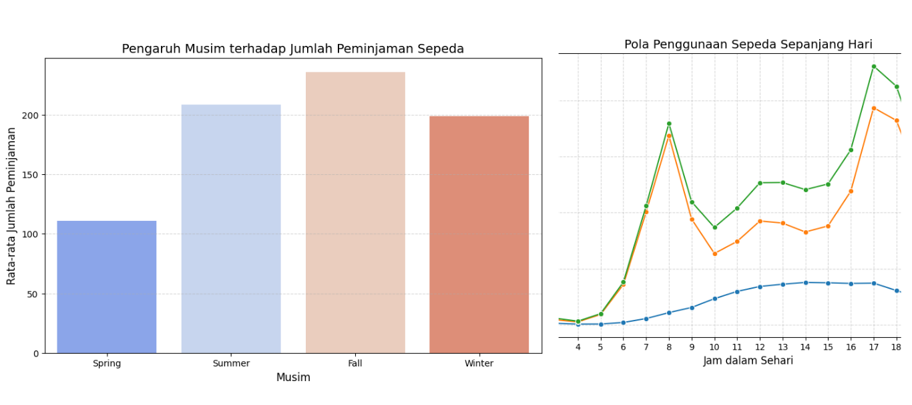

🚲 Bike Sharing Data Analysis
Exploratory Data Analysis & Data Visualization on Hourly & Daily Rental Patterns

Overview
An end-to-end Exploratory Data Analysis (EDA) project examining the Bike Sharing dataset containing hourly (17,379 rows) and daily (731 rows) records. The project covers data wrangling (assessing missing values and duplicates, changing date formats, and dropping redundant columns), exploratory statistical analysis, data merging, and explanatory visualization using Matplotlib and Seaborn to answer business questions regarding hourly usage patterns and seasonal effects.
🎯 Business Questions & Objectives
- Business Questions: How does bike rental usage vary throughout the day? How does seasonality affect the total number of bike rentals?
- Objectives: Analyze hourly rental trends across casual and registered users, evaluate seasonal impacts on user demand, and provide clear visual insights for operational planning.
📊 Key Data Insights
| Analysis Category | Key Findings & Results |
|---|---|
| Hourly Trend (Commuter Peak) | Highest demand occurs during morning (07:00–09:00) and evening (17:00–19:00) commute hours, peaking at 17:00–18:00 (avg. 372 users). |
| Seasonal Impact | Fall (Autumn) records the highest average rentals, followed by Summer, while Spring and Winter record the lowest due to adverse weather. |
| Workingday vs. Holiday | Registered users dominate workdays for commuting, whereas casual users increase during weekends/holidays for leisure. |
💡 Strategic Business Insights
- Commuter vs. Leisure Behavior: Hourly and workingday analysis confirms that registered users heavily rely on bikes for routine transportation, while casual users drive weekend and daytime recreational use.
- Weather & Seasonality Effect: Clear weather and moderate temperatures strongly increase rentals, whereas heavy wind, rain, or extreme cold significantly suppress rider activity.
⚙️ Analysis Workflow
Data Wrangling
Gathering, Assessing & Cleaning Datasets
Exploratory EDA
Statistical Summary & Grouping Analysis
Data Merging
Combining Hourly & Daily Dataframes
Visualization
Line & Bar Plots via Seaborn/Matplotlib